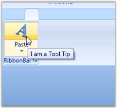
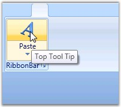
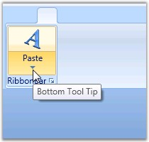

Ribbon instance now provides support to set the ToolTip for the Split Button. It provides the following ToolTip options.
· Setting the ToolTip for the Entire Split Button
· Setting the ToolTip for the Upper and Lower Half of the Split Button
Setting the ToolTip for the Entire Split Button
You can set the tooltip for the entire Split Button by using the ToolTip property of the Split Button. Use the following code for setting the tooltip feature.
|
[XAML]
<syncfusion:SplitButton Label="Paste" SizeForm="Large" > <syncfusion:SplitButton.ToolTip> <syncfusion:ScreenTip Description="Split Button Tooltip" VerticalOffset="32"> <TextBlock Text="I am a Tool Tip" /> </syncfusion:ScreenTip> </syncfusion:SplitButton.ToolTip> </syncfusion:SplitButton> |
|
[C#]
ScreenTip screentip = new ScreenTip(); TextBlock text = new TextBlock(); text.Text = "I am a Tool Tip"; screentip.Content = text; splitbutton.ToolTip = screentip; splitbutton = new SplitButton(); splitbutton.Label = "Split 1";
SplitButton splitbutton 1= new SplitButton(); splitbutton1.Label = "Split 2"; |

Figure 903: ToolTip set for the Split Button
Setting the ToolTip for the Upper and Lower Half of the Split Button
You can set the tooltip for the upper and lower half of the Split Button.
The ToolTip property is used to set the tooltip for the upper half of the Split Button, while the ToggleButtonToolTip property is used to set the tooltip for the drop-down in the lower half of the split button. Here is the code snippet for setting these properties.
|
[XAML]
<syncfusion:SplitButton Label="Paste" SizeForm="Large" > <syncfusion:SplitButton.ToolTip> <syncfusion:ScreenTip Description="Split Button Tooltip" VerticalOffset="32"> <TextBlock Text="Top Tool Tip" /> </syncfusion:ScreenTip> </syncfusion:SplitButton.ToolTip> <syncfusion:SplitButton.ToggleButtonToolTip> <syncfusion:ScreenTip Description="Toggle Button Tooltip" VerticalOffset="29"> <TextBlock Text="Bottom Tool Tip" /> </syncfusion:ScreenTip> </syncfusion:SplitButton.ToggleButtonToolTip> </syncfusion:SplitButton> |
|
[C#]
ScreenTip screentip = new ScreenTip(); TextBlock text = new TextBlock(); text.Text = "Top Tool Tip"; screentip.Content = text;
// Setting the tooltip for the upper half of the split button. splitbutton.ToolTip = screentip;
ScreenTip screentip1 = new ScreenTip(); TextBlock text1 = new TextBlock(); text1.Text = "Bottom Tool Tip"; screentip1.Content = text;
// Setting the tooltip for the drop-down in the lower half of the split button. splitbutton.ToggleButtonToolTip = screentip1; screentip = new ScreenTip(); TextBlock text = new TextBlock(); text.Text = "I am a Tool Tip"; screentip.Content = text; splitbutton.ToolTip = screentip; splitbutton = new SplitButton(); splitbutton.Label = "Split 1";
SplitButton splitbutton 1= new SplitButton(); splitbutton1.Label = "Split 2"; |

Figure 904: ToolTip set for the Upper Half of the Split Button

Figure 905: ToolTip set for the Drop-Down in the Lower Half of the Split Button